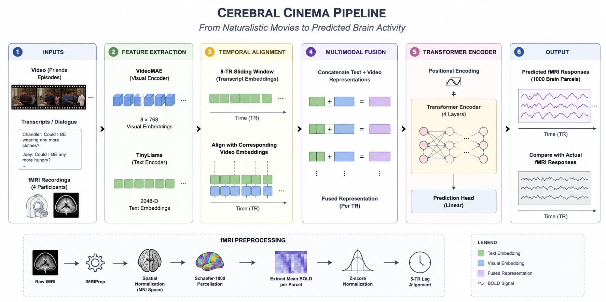
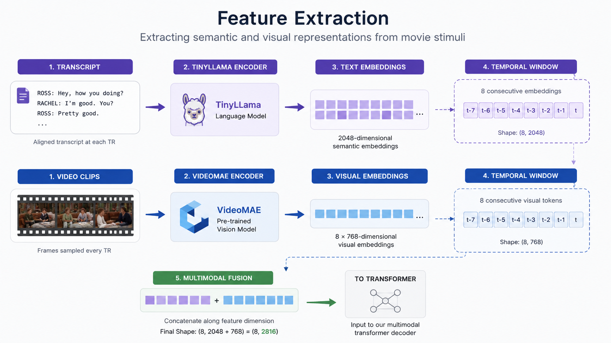

Overall Workflow

Complete multimodal workflow from movie stimuli to whole-brain activity prediction.

Friends Seasons 1–6 are divided into short movie clips.
Subtitle transcripts synchronized with each TR.
Whole-brain recordings from four participants.
Movie, transcript and brain recordings aligned using TR.
Dialogue transcripts are encoded using TinyLlama to generate 2048-dimensional semantic embeddings. Video clips are processed using VideoMAE, producing 768-dimensional visual representations for each temporal window.

Eight consecutive transcript embeddings are combined into a sliding temporal window. The corresponding VideoMAE features are aligned with each repetition time (TR), allowing the model to learn contextual relationships across multiple seconds of the movie.
Voxel responses are z-score normalized.
Voxel activity averaged into 1000 cortical parcels.
Targets shifted by five TRs to account for delayed BOLD response.
Each training sample predicts one 1000-dimensional brain vector.